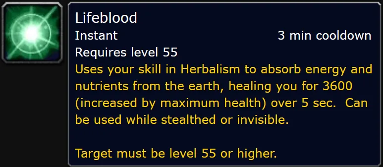

WotLK Warmane Icecrown - Herbalism 1 to 450 (x3) and Bonuses
Lifeblood, addons, where to pick herbs at each level and trainers.
Herbalism Bonus
Lifeblood (Herbalism Passive Ability)
-
Effect: Instantly heals you and grants a heal-over-time
-
Scaling: Heal amount scales with your Herbalism skill

Addons
Gather Mate 2
Gather Mate allows you to record your personal route (it records the herb locations) and optimize your route around the herbs you personally find.
Link : https://warperia.com/addon-wotlk/gathermate2/
Farm Hud
Make your gathering life easier with FarmHud. This addon will turn your minimap into a hud, which will make tracking your herbs and ores easier.
Link : https://warperia.com/addon-wotlk/farmhud/
Leveling 1-450
Classic
| Level | Herbs | Zone |
|---|---|---|
| 1-70 | Peacebloom (1), Silverleaf (1), Earthroot (15) | Elwynn Forest |
| Learn Herbalism in Elwynn Forest 50 | ||
| 70-125 | Mageroyal (50), Swiftthistle (50), Briarthorn (70), Bruiseweed (100), Wild Steelbloom (115), Grave Moss (120) | Duskwood |
| Learn Herbalism in Stormwind 125 | ||
| 125-170 | Wild Steelbloom (115), Grave Moss (120), Kingsblood (125) | Duskwood |
| 170-205 | Fadeleaf (160), Goldthorn (170), Khadgar's Whisker (185) | Stranglethorn Vale |
| Learn Herbalism in Stormwind 200 | ||
| 205-260 | Firebloom (205) | Searing Gorge |
| 260-300 | Sun Grass (230), Golden Sansam (260), Dreamfoil (270), Mountain Silversage (280) | Burning Steppes |
TBC
| Level | Herbs | Zone |
|---|---|---|
| Learn Herbalism in Hellfire Peninsula or Shattrath 275 | ||
| 300-350 | Felweed (300), Dreaming Glory (315), Terocone (325) | Hellfire Peninsula, Terokkar Forest, Zangarmarsh |
WotLK
| Level | Herbs | Zone |
|---|---|---|
| Learn Herbalism in Dalaran or in Howling Fjord 350 | ||
| 350-400 | Goldclover (350), Tiger Lily (375), Talandra's Rose (385) | Howling Fjord, Grizzly Hills |
| 400-435 | Talandra's Rose (385), Dragonblight Frozen Herb (400) | Zul'Drak, Dragonblight |
| 435-450 | Wintergrasp Frozen Herb (415), Lichbloom (425), Icethorn (435) | Wintergrasp |
Herbalism Trainers
| Alliance | Horde | Neutral |
|---|---|---|
| Reyna Stonebranch – Ironforge | Jandi – Orgrimmar | Malvor – Moonglade (Nighthaven) |
| Tannysa – Stormwind City | Martha Alliestar – Undercity | Botanist Alaenra - Shattrath |
| Firodren Mooncaller – Darnassus | Komin Winterhoof – Thunder Bluff | Jijia - Shattrath |
| Herbalist Pomeroy – Elwynn Forest | Faruza – Tirisfal Glades | Dorothy Egan – Dalaran |
| Malorne Bladeleaf – Teldrassil | Mishiki – Durotar | |
| Kali Healtouch – Loch Modan | Angrun – Stranglethorn Vale | |
| Cylania Rootstalker – Ashenvale | Aranae Venomblood – Hillsbrad Foothills | |
| Telurinon Moonshadow – Wetlands | Botanist Nathera – Silvermoon City | |
| Brant Jasperbloom – Dustwallow Marsh | Ruak Stronghorn – Thrallmar, Hellfire Peninsula | |
| Alma Jainrose – Redridge Mountains | Marjory Kains – Howling Fjord | |
| Cemmorhan – The Exodar | Tansy Wildmane – Borean Tundra | |
| Rorelien – Honor Hold, Hellfire Peninsula | Flora Silverwind – Stranglethorn Vale, Booty Bay | |
| Fayin Whisperleaf – Howling Fjord | ||
| Korea Moondancer – Borean Tundra |
Source
https://www.wow-professions.com/wotlk/mining-leveling-guide-wotlk-classic